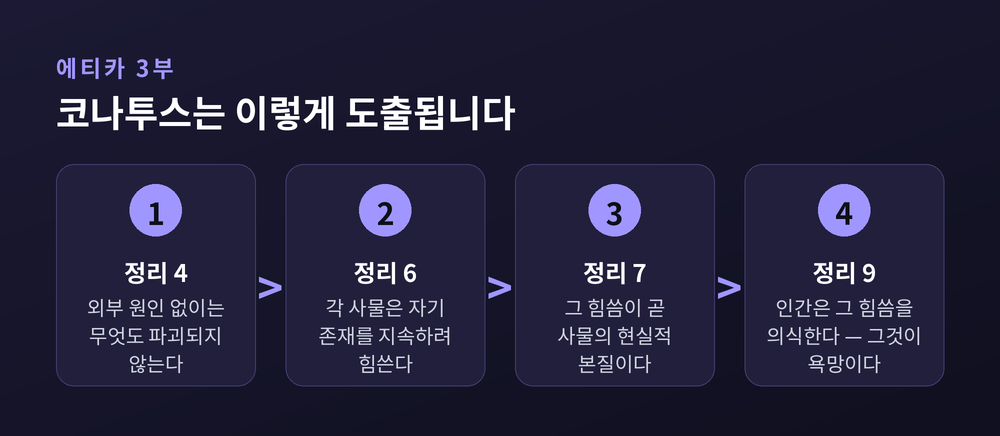
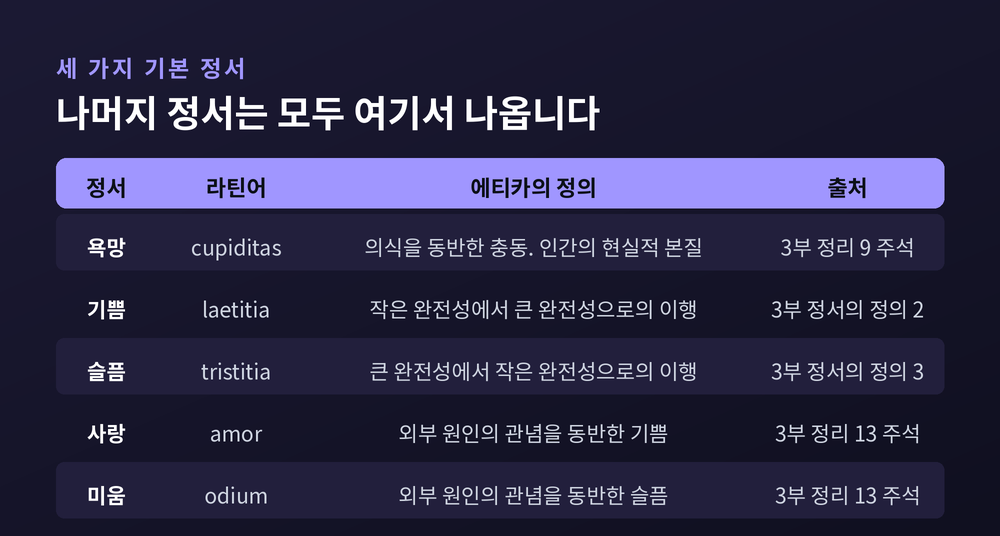
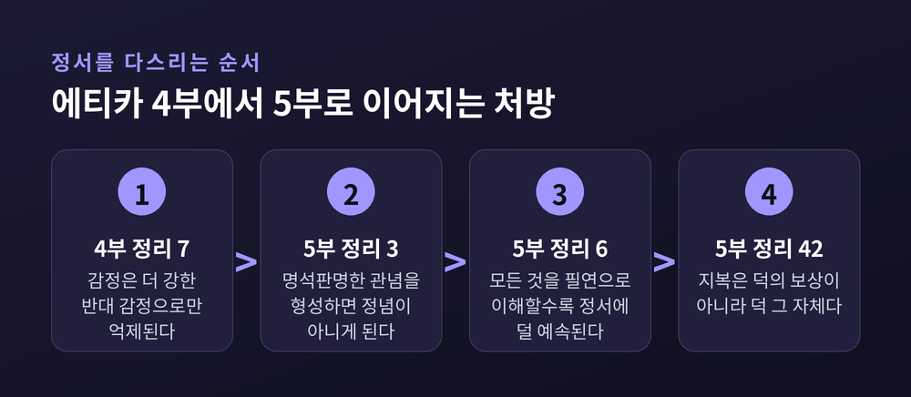
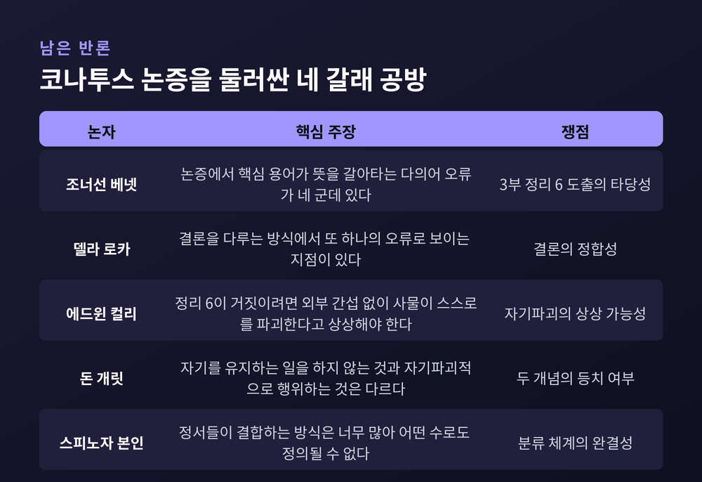

세 줄 요약
이번 글에서는 스피노자의 코나투스와 감정론을 정리해 보겠습니다. 슬픔과 기쁨을 인식의 문제로 옮겨놓은 논리가 『에티카』 안에서 어떻게 짜였는지, 그리고 어떤 반론이 남았는지 차례로 짚어보겠습니다.
바뤼흐 스피노자는 1632년에 태어나 1677년에 세상을 떠났습니다. 렌즈를 갈아 생계를 꾸린 사람이었습니다. 1656년 7월 27일, 암스테르담의 포르투갈계 유대인 공동체는 그에게 헤렘, 곧 파문을 선고합니다. 스탠퍼드 철학백과는 이를 그 공동체가 선고한 것 가운데 가장 가혹한 문서였고 끝내 철회되지 않았다고 기록합니다.
주저 『에티카』의 라틴어 원제는 『기하학적 순서로 논증된 윤리학』입니다. 생전에는 나오지 못했습니다. 사후 1년 안인 1677년, 암스테르담에서 『유고집』에 실려 세상에 나옵니다.
3부의 제목은 '정서의 기원과 본성에 관하여'입니다. 서문에서 스피노자는 기존 감정론 전체를 겨눕니다.
"그들은 인간을 자연 안에서 하나의 나라 안의 또 다른 나라처럼 놓인 것으로 여기는 듯하다."
라틴어로 임페리움 인 임페리오, 나라 안의 나라입니다. 사람들은 인간의 결함을 자연 일반의 힘이 아니라 인간 본성 안의 신비한 흠결에 돌리고, 그것을 한탄하거나 조롱하거나 매도한다는 것입니다.
스피노자가 내놓는 대안은 단호합니다. 자연에는 자연의 결함으로 돌릴 수 있는 일이 일어나지 않습니다. 미움도 분노도 질투도 자연의 동일한 필연성에서 따라 나옵니다. 그러므로 그는 이렇게 씁니다.
"나는 인간의 행위와 욕망을, 마치 선과 면과 입체를 다루듯 정확히 같은 방식으로 고찰할 것이다."
데카르트에 대한 평가도 서문에 있습니다. 데카르트가 감정을 1차 원인으로 설명하고 정신이 감정을 절대적으로 지배하는 길을 제시하려 했지만, 자기 지성의 예리함을 과시한 것 외에는 아무것도 이루지 못했다는 것입니다.
코나투스는 3부에서 다섯 개 정리를 거쳐 도출됩니다. 순서가 중요합니다.
정리 4는 이렇게 시작합니다. "어떤 것도 자기 외부의 원인에 의하지 않고서는 파괴될 수 없다." 증명의 요지는 간단합니다. 사물의 정의는 그 사물의 본질을 긍정할 뿐 부정하지 않습니다. 외부를 배제하고 사물 자체만 들여다보면, 그것을 무너뜨릴 무엇도 그 안에 없습니다.
정리 6이 결론입니다. "각각의 사물은, 자기 안에 있는 한, 자기 존재를 지속하려고 힘쓴다." 라틴어 원문의 동사가 코나투르이고, 그 명사형이 코나투스입니다.
정리 7이 한 걸음 더 나갑니다. "각각의 사물이 자기 존재를 지속하려 힘쓰는 그 노력은, 그 사물의 현실적 본질에 다름 아니다."
여기서 뒤집히는 것이 있습니다. 코나투스는 사물이 '가진' 성질이 아닙니다. 사물 그 자체입니다. 케임브리지판 해설은 이를 이렇게 풀이합니다. 고양이가 된다는 것은 고양이답게 어떤 방식으로 힘쓰는 일이고, 책상이 된다는 것은 그 복합체가 책상답게 힘쓰는 일이라는 것입니다.

정리 9는 이 노력을 인간에게 적용합니다. 정신은 명석판명한 관념을 가질 때나 혼란한 관념을 가질 때나 무한정한 시간 동안 자기 존재를 지속하려 힘쓰며, 그 노력을 의식한다는 것입니다.
그리고 주석에서 층위가 갈립니다. 이 노력이 정신에만 관련될 때는 의지, 정신과 신체에 함께 관련될 때는 충동, 그 충동에 대한 의식이 더해질 때는 욕망입니다. 스피노자의 말로는 "욕망은 의식을 동반한 충동"입니다.
같은 주석에 『에티카』에서 가장 도발적인 문장 하나가 놓여 있습니다.
"우리는 어떤 것을 좋다고 판단하기 때문에 그것을 향해 힘쓰거나 바라거나 욕구하는 것이 아니다. 반대로, 우리가 그것을 향해 힘쓰고 바라고 욕구하기 때문에 그것을 좋다고 판단한다."
예전에는 순서가 반대였습니다. 스콜라 전통, 특히 아퀴나스에게 지성적 욕구는 무언가가 좋기 '때문에' 그것을 욕구합니다. 판단이 앞서고 욕구가 뒤따릅니다. 지금 스피노자가 말하는 것은 정반대입니다. 욕구가 앞서고 판단이 뒤따릅니다.
3부 정리 39의 주석에서 그는 같은 말을 예시로 확인합니다. 구두쇠는 돈의 풍족함을 최고로 여기고, 야심가는 영광을 무엇보다 원하며, 질투하는 자에게는 남의 불행보다 즐거운 것이 없다는 것입니다. 각자가 자기 정서에 따라 무엇이 좋고 나쁜지, 무엇이 낫고 못한지를 판단합니다.
4부 정리 8은 이 노선을 한 문장으로 굳힙니다. "선악의 인식은 우리가 의식하는 한에서의 기쁨 또는 슬픔의 정서에 다름 아니다."
3부 정리 11의 주석에서 스피노자는 기본 정서를 확정합니다.
"기쁨이란 정신이 더 큰 완전성으로 이행하는 수동 상태를 뜻하고, 슬픔이란 정신이 더 작은 완전성으로 이행하는 수동 상태를 뜻한다."
그리고 덧붙입니다. "이 셋 말고 다른 기본 정서를 나는 인정하지 않는다." 욕망, 기쁨, 슬픔. 나머지는 모두 여기서 나옵니다.
여기서 '완전성'이라는 말에 걸리실 수 있겠습니다. 스피노자에게 이 단어는 신학적 목표가 아닙니다. 활동 역량, 곧 무언가를 할 수 있는 힘의 크기입니다. 스탠퍼드 철학백과도 존재를 지속하는 힘의 증가가 더 큰 완전성으로의 이행이고, 감소가 더 작은 완전성으로의 이행이라고 정리합니다.
가장 결정적인 대목은 3부 끝 '정서의 정의' 3의 해설에 있습니다. 스피노자는 자기 정의에서 한 단어를 따로 강조합니다.
"나는 '이행'이라고 말한다."
이유를 그가 직접 밝힙니다. 기쁨은 완전성 자체가 아닙니다. 인간이 도달할 그 완전성을 가지고 태어났다면, 기쁨이라는 정서 없이 그것을 지녔을 것이기 때문입니다. 슬픔도 마찬가지입니다. 슬픔은 더 작은 완전성 자체가 아니고, 더 큰 완전성의 부재도 아닙니다. 그가 붙인 이유가 인상적입니다.
"부재는 아무것도 아니지만, 슬픔이라는 정서는 하나의 활동이다."

그래서 감정은 점이 아니라 화살표입니다. 지금 내가 어디에 있느냐가 아니라, 어디에서 어디로 움직이고 있느냐가 감정입니다.
기쁨과 슬픔만으로는 사랑과 미움이 설명되지 않습니다. 3부 정리 13의 주석에서 스피노자는 그 빈자리를 채웁니다.
"사랑이란 외부 원인의 관념을 동반한 기쁨에 다름 아니고, 미움이란 외부 원인의 관념을 동반한 슬픔에 다름 아니다."
기쁨과 슬픔이라는 이행에, 원인에 대한 '관념'이 덧붙습니다. 이 결합에서 감정과 인식이 처음으로 한 덩어리가 됩니다.
문제는 그 관념이 틀릴 수 있다는 점입니다. 3부 정리 28을 보면 스피노자가 고른 동사가 눈에 들어옵니다. 우리는 기쁨에 이바지한다고 '표상하는' 것을 실현하려 애쓰고, 슬픔에 이바지한다고 '표상하는' 것을 없애려 애씁니다. 실제로 그런 것이 아니라, 그렇다고 우리가 생각하는 것입니다.
3부 정리 51이 그 결과를 확인합니다. "서로 다른 사람이 같은 대상에 의해 다르게 영향받을 수 있고, 같은 사람도 때에 따라 같은 대상에 의해 다르게 영향받을 수 있다." 주석에서 그는 한 사람이 사랑하는 것을 다른 사람은 미워할 수 있고, 한때 미워하던 것을 같은 사람이 나중에 사랑할 수 있다고 씁니다.
같은 주석에 이런 문장도 있습니다. 사람이 기쁨이나 슬픔의 원인이라고 믿는 것들이 "종종 순전히 상상의 산물"이라는 지적입니다.
후회와 자기만족의 정의도 여기 나옵니다. 후회는 자기 자신을 원인으로 하는 관념을 동반한 슬픔이고, 자기만족은 같은 관념을 동반한 기쁨입니다. 스피노자는 이 두 정서가 가장 강렬하다고 덧붙이는데, 그 이유가 매섭습니다. "사람들이 자기를 자유롭다고 믿기 때문"입니다.
지금까지의 조각을 잇는 것이 3부 정리 1입니다.
"정신은 적합한 관념을 갖는 한 필연적으로 능동적이고, 부적합한 관념을 갖는 한 필연적으로 수동적이다."
3부 정의 3의 단서와 맞물리면 등식이 완성됩니다. 우리가 어떤 변용의 적합한 원인일 수 있으면 그 정서를 능동이라 부르고, 그렇지 않으면 정념이라 부릅니다. 정념은 곧 부적합하고 혼란한 관념입니다. 스탠퍼드 철학백과의 요약이 정확합니다. 어떤 정서를 정념으로 만드는 것은 그것이 혼란하다는 사실, 따라서 부적합하다는 사실이라는 것입니다.
여기서 눈에 띄는 비대칭이 하나 있습니다. 3부 정리 59는 정신이 능동적인 한에서 귀속되는 정서 가운데 기쁨이나 욕망으로 환원되지 않는 것은 없다고 말합니다. 뒤집으면 이렇습니다. 능동적인 슬픔은 없습니다. 슬픔은 정의상 언제나 외부에 당한 것입니다. 기쁨에는 수동적인 것과 능동적인 것이 둘 다 있지만, 슬픔에는 수동적인 것뿐입니다.
처방은 4부와 5부에 걸쳐 나옵니다. 순서가 있습니다.
4부 정리 7이 먼저 냉정한 사실을 알립니다. "어떤 정서는 그것과 반대되면서 더 강한 다른 정서에 의해서만 억제되거나 파괴될 수 있다." 이성적 판단만으로는 감정을 이기지 못한다는 뜻입니다. 이성이 힘을 가지려면 그 자체가 정서적 힘을 띠어야 합니다.
그다음이 5부 정리 3입니다. "정념인 정서는, 우리가 그것에 대한 명석판명한 관념을 형성하는 즉시 정념이기를 그친다."
5부 정리 4의 따름정리가 이 처방에 범위를 부여합니다. 어떤 정서든 그에 대한 명석판명한 개념을 형성할 수 없는 것은 없다는 것입니다. 원리상 예외가 없다는 선언입니다.
5부 정리 6은 방향을 알려줍니다. 정신은 모든 것을 필연적인 것으로 이해하는 한, 정서에 대해 더 큰 힘을 갖고 정서에 덜 예속됩니다.

『에티카』의 마지막 정리인 5부 정리 42에서 인과는 한 번 더 뒤집힙니다.
"지복은 덕의 보상이 아니라 덕 그 자체다. 우리는 욕망을 억제하기 때문에 그것을 누리는 것이 아니라, 반대로 그것을 누리기 때문에 욕망을 억제할 수 있다."
이 체계가 매끄럽기만 한 것은 아닙니다. 한계를 짚고 가야겠습니다.
가장 오래된 쟁점은 코나투스 명제 자체의 도출입니다. 조너선 베넷은 이 논증에서 핵심 용어들이 뜻을 갈아타는 다의어 오류를 네 군데 지적했습니다. 미셸 델라 로카는 결론을 다루는 방식에서 또 하나의 오류로 보이는 지점을 짚었습니다. 에드윈 컬리는 옹호 쪽에 섰습니다. 정리 6이 거짓이려면 외부 간섭 없이 사물이 스스로를 파괴할 일을 한다고 상상해야 하는데 그것이 불가능하다는 논변입니다. 여기에 돈 개릿이 되물었습니다. 자기를 유지하는 일을 하지 않는 것과 자기파괴적으로 행위하는 것을 같다고 놓아도 되느냐는 것입니다.
해석의 흐름도 바뀌었습니다. 초기 해석은 정리 6을 정리 4와 5의 개념적 고려만으로 끌어내려 했습니다. 최근에는 마틴 린, 발테리 빌야넨 등이 코나투스를 저항에 맞서 작동하는 '힘'의 문제로 읽는 노선으로 옮겨가는 추세입니다.
분류 체계도 정돈되어 있지 않습니다. 스피노자는 정서를 셋으로 환원한다면서도, 대상의 종류만큼 정념이 있다고 말합니다. 3부 정리 59의 주석에서 그 스스로 정서들이 결합하는 방식이 너무 많아 어떤 수로도 정의될 수 없다고 인정합니다.
무엇보다 스피노자 자신이 완전한 해방을 약속하지 않습니다. 우리는 언제나 외부 원인에 종속되어 있으므로 정념에서 완전히 벗어날 수 없습니다. 남는 것은 자리를 옮기는 일입니다. 자기의 불행한 정념조차 자연의 질서에 따라 일어난 일로 이해하는 자리입니다.

이 감정론이 동시대에 미친 직접적 영향은 크지 않았습니다. 스탠퍼드 철학백과는 그 이유를 이렇게 추정합니다. 스피노자의 감정론이 그의 체계 전체와 너무 긴밀히 얽혀 있어 부분만 떼어 가져가기 어려웠다는 것입니다.
19세기에 사정이 달라집니다. 1881년 니체는 친구 오버베크에게 편지를 씁니다. 스피노자에게서 선구자를 발견하고 놀랐으며 완전히 매혹되었다고 적었습니다. 그가 든 이유가 정확히 이 글의 주제입니다. 두 사람 모두 "인식을 가장 강력한 정서로 만들려는" 경향을 공유한다는 것이었습니다.
20세기 말과 21세기에는 신경과학이 그를 다시 불러냅니다. 안토니오 다마지오는 2003년 책 『스피노자의 뇌: 기쁨, 슬픔, 그리고 느끼는 뇌』에서 스피노자를 심신을 확고히 연결한 '원생물학자'라고 부릅니다. 그는 코나투스를 개체가 자기를 보존할 뿐 아니라 전반적 안녕의 감각을 유지하려는 노력으로 읽고, 정서를 항상성을 유지하려는 신체의 노력이 물리적으로 드러난 것으로 규정합니다.
다만 이것은 신경과학자의 전유이지 스피노자 해석의 정본은 아닙니다. 그 구분은 남겨두는 편이 정직하겠습니다.
끝으로 한 마디만 더 드리겠습니다.
스피노자가 슬픔을 없애라고 말한 적은 없습니다. 그가 말한 것은 슬픔이 어디에서 어디로 가는 움직임인지, 그 원인을 내가 제대로 알고 있는지를 보라는 것이었습니다. 3부 정리 51의 주석에 있던 그 문장이 오래 남습니다. 우리가 기쁨이나 슬픔의 원인이라 믿는 것들이 종종 순전히 상상의 산물이라는 말입니다.
"감정을 이기는 것은 이성이 아니라, 이해에서 나온 더 강한 감정입니다."
지금 겪는 슬픔의 원인을 정확히 아느냐고 물으신다면, 저는 아직 모른다고 답하겠습니다. 다만 그 물음이 슬픔을 다루는 첫 자리라는 것만은 분명해 보입니다.